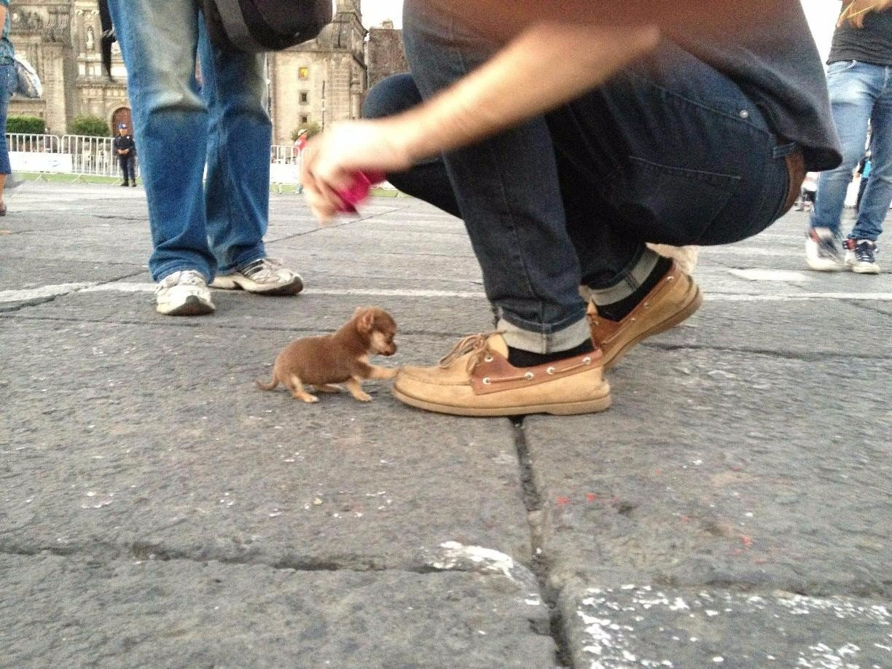

Зверское нападение собаки на человека
Оператору удалось запечатлить нападение собаки на человека
Оператору удалось запечатлить нападение собаки на человека
Ученые исследовали ген рака взятый у лабораторных крыс и нашли продукт, который убивает рак и им стал...
В России ученые изобрели сыворотку бессмертия с помощью данных, взятых с адронного коллайдера
Исследователи наконец то обнаружили современную Атлантиду, и ей оказался Челябинск
В Тамбове человек умер от собственной жадности, так, как человека мучало похмелье, но пиво в баре за 200 рублей он покупать не стал